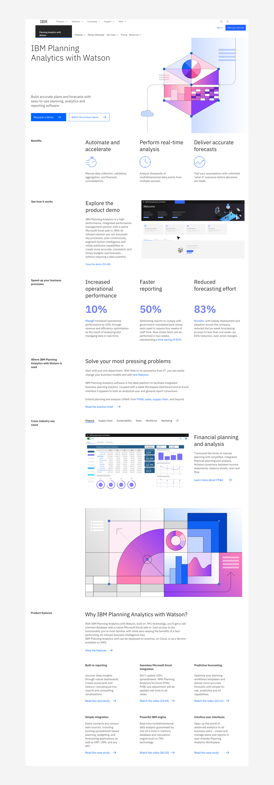
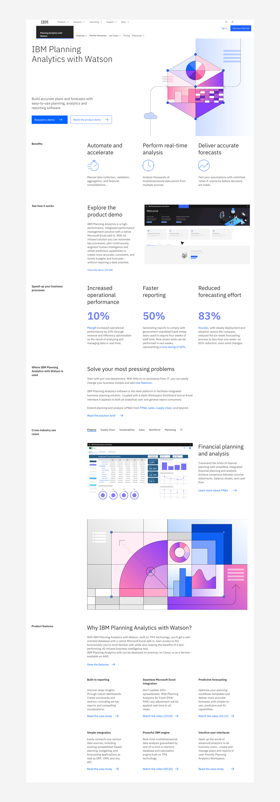

IBM Planning Analytics
IBM Planning Analytics (PA) is a complete planning and analytics
solution that helps organizations drive efficiency and uncover new
insights directly from their data. And the web experience, the main
marketing tool used to sell the product, had reached an inflection
point. It was crowded with too much information (45+ pages) and not
visually cohesive, which made it confusing to navigate and led to
underperforming expectations.
We needed to give users a fresh experience and prioritize the
information they wanted to see when it came to learning about the
product. The old site was not taking advantage of high-traffic areas
and lacked a clear design vision, contributing to a sense of clutter
and information overload. This is where we applied design, UI/UX and
analytics to solve the problem. An improved IBM Planning Analytics
design created an experience that had a demonstrable positive impact
on the business.
As a result of the design overhaul, there was a 14% increase in
sign-ups for product demos leading to a connection with the IBM
Sales team. In addition, there was also a 13.7% increase in organic
entry visits because the new navigation and sitemap were aligned
with the SEO team.
 
